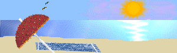
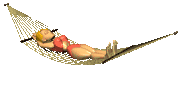
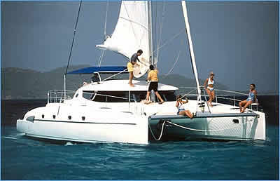
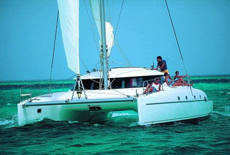
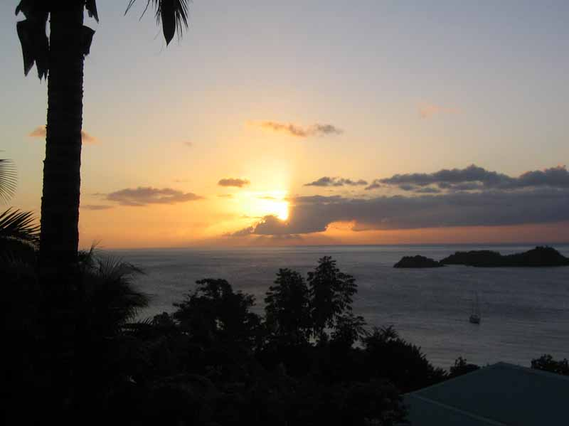
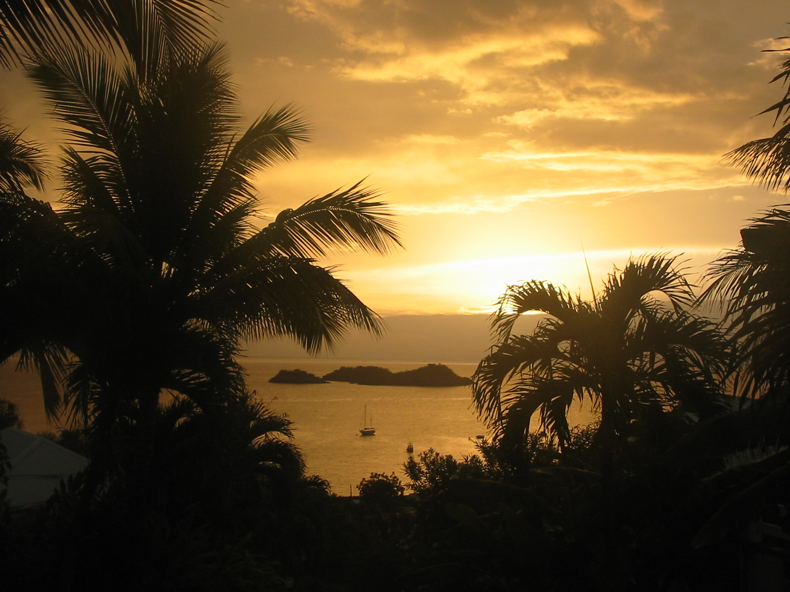
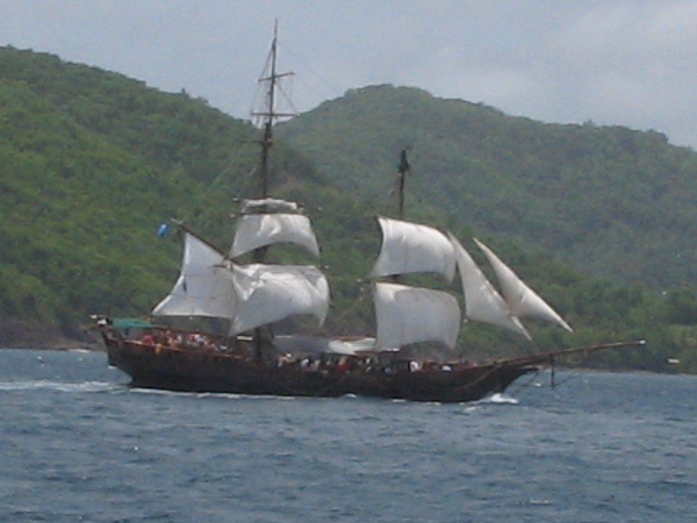
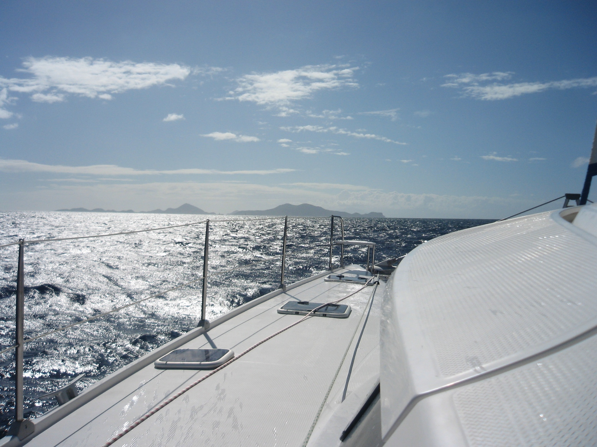

Morne TARARE - 97125 BOUILLANTE
Tél./Fax : 05 90 98 72 05 - Mobile : 06 90 40 63 48 GUADELOUPE
|
|
Banish boredom! A trip to Guadeloupe with views facing the Reserve Cousteau!

How to escape from the daily stress and be in shape? The Nest Tropical holds secret stays in the Caribbean for diving in Malendure or Reserve Cousteau Guadeloupe!
Opposite the beach Malendure, west coast of Basse Terre, the area of approximately 400 hectares reserve Cousteau called to protect the funds and restrict fishing. In a paradise to 40 meters with one of the most beautiful views of West Bay on Malendure Pigeon and islands, the famous Cousteau reserve, a paradise for divers in the Caribbean Sea. "Dive Malendure reserve Cousteau Guadeloupe": discover the wonders of nature! Stays immersed in the Cousteau Reserve gives you the chance to discover the elk horn coral, sea fans in the fan-shaped yellow, brown or purple brains of Venus. Do not forget the amazing fish of colors that provide unique performances: parrot fish, moon fish, sergeant majors the yellow and blue, fish safe, the triggerfish, butterfly fish with a second eye shadow, scarlet suns, scorpion fish and many others. To make your stay perfect dive to Malendure, discover the hiking and walks, cruises on the catamaran and of course the many events and parties in Guadeloupe, Sylvie and Jean Pierre welcome you in a friendly atmosphere. At the heart of all of hiking, you can discover all the wonderful sites on the Basse Terre Guadeloupe. They offer a set of 6 broken Creole bungalows with a possible option clim. mobile, equipped with 4 air-conditioned bungalows and a beautiful apartment with a capacity of 6 to 9 people. All in a perfectly maintained tropical garden you will find 2 stone barbecue for your grill. WIFI ADSL internet access free. In this paradise of peace featuring a swimming pool (approved and monitored by the DSDS monthly) to 11.50 meters by 5.50 meters. You can relax and spend your evenings in a beautiful carbet of 150 m². You can also share your meal with friends and neighbors. For groups and families we have installed a kitchen. A washing machine is available with participation fee of € 2 per wash. A corner is provided in the property to expand your machine. Finally, to distract you pending our beautiful sunsets, you will find a shuffleboard, play giant checkers and table tennis and why not end your evening with a small or a tarot belote ...

Leasure and activities
more tropical in the nest!
To make your stay perfect dive to Malendure, discover the hiking and walks, cruises on the catamaran and of course the many events and festivals of Guadeloupe.
To be pleasant and Jean Pierre Sylvie offer side trips to the Caribbean aboard their beautiful 14-meter catamaran, a 46 Bahia the Loubine. You can admire the leeward coast and many other locations depending on the weather and the program of the week available in your bungalow. You keep an unforgettable memory of your stay in Tropical Nest ... You participate in maneuvers and what happiness to discover the Holy in the wind and take a tour of the island ...


The nest tropical, ideal for divers is one of the cottages
closest to the beach and its famous Malendure clubs.
You will benefit from tariffs
with our preferred partners and from the boat
Glass bottom the "Nautilus".
Our site is a reception point for hikers who love the holidays. It is also a base for tours of the Basse-Terre, ex; Soufriere, the field of Coluche, the Col des Mamelles, Carbet Falls, and many others ... Remember to click on the links page of this site to discover more.
All shops, restaurants, doctors, pharmacists, are 300 meters from the nest.

Sunset from the carbet.



And they are still there, "Loubine is reckless with its tenants and is in collision !!... (bateau du film Pirates of the Caribbean)
|
|
|
SCI LE NID TROPICAL - Hébergement gîte Bouillante Malendure
-
Location de Bungalows et de Gîtes pour Vacances en Guadeloupe. |
|